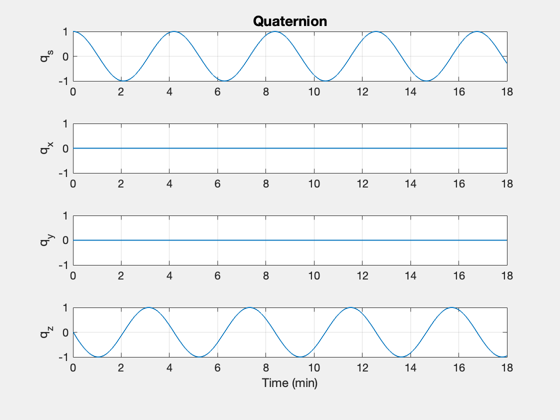
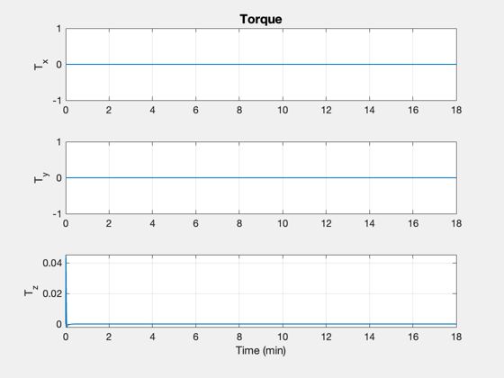
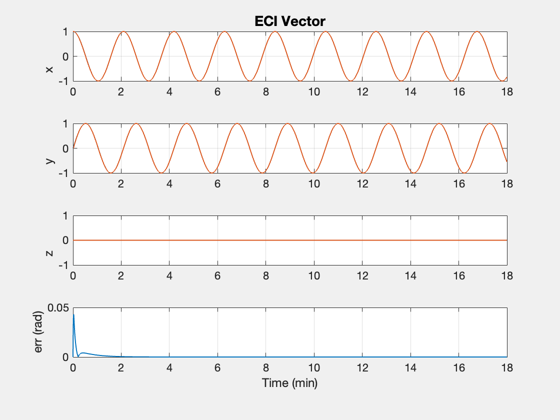

Demonstrate vector tracking using PID3Axis.
Tracks a rotating ECI vector aligning the body x axis with the vector.
------------------------------------------------------------------------- See also PID3Axis, PIDMIMO, RK4, RHSRigidBodyLinear -------------------------------------------------------------------------
Contents
%-------------------------------------------------------------------------- % Copyright (c) 2014 Princeton Satellite Systems, Inc. % All Rights Reserved %-------------------------------------------------------------------------- % Since version 2014.1 %--------------------------------------------------------------------------
Set up the control system
%--------------------------- omega = 0.5; tauIntegral = 40; % sec omegaFilter = 5*omega; dT = 0.2; omegaNyquist = pi/dT; d = PID3Axis; [d.a, d.b, d.c, d.d] = PIDMIMO(1,1,omega,tauIntegral,omegaFilter,dT);
Simulate
%---------- tEnd = 18; % minutes nSim = ceil(tEnd*60/dT); t = (0:(nSim-1))*dT; omegaVector = 0.05; d.mode = 1; d.inertia = eye(3); x = [1;0;0;0;0;0;0]; eci_vector = [cos(omegaVector*t);sin(omegaVector*t);0*t]; d.body_vector = [1;0;0]; body_vector_eci = QTForm( x(1:4), d.body_vector ); xP = zeros(14,nSim); for k = 1:nSim body_vector_eci = QTForm( x(1:4), d.body_vector ); d.eci_vector = eci_vector(:,k); [torque, d] = PID3Axis( x(1:4), d ); arg = body_vector_eci'*d.eci_vector; if( abs(arg) > 1 ) arg = sign(arg); end err = acos(arg); xP(:,k) = [x;torque;body_vector_eci;err]; d.torque = torque; x = RK4(@RHSRigidBodyLinear,x,dT,0,d); end fprintf(1,'Bandwidth %8.3f (rad/s)\n',omega); fprintf(1,'Vector frequency %8.3f (rad/s)\n',omegaVector); fprintf(1,'Nyquist frequency %8.3f (rad/s)\n',omegaNyquist); fprintf(1,'Filter frequency %8.3f (rad/s)\n',omegaFilter); fprintf(1,'Integrator %8.1f (s)\n',tauIntegral);
Bandwidth 0.500 (rad/s) Vector frequency 0.050 (rad/s) Nyquist frequency 15.708 (rad/s) Filter frequency 2.500 (rad/s) Integrator 40.0 (s)
Plot
%------ [t,tL] = TimeLabl( t ); Plot2D( t, xP(1:4,:), tL, {'q_s' 'q_x' 'q_y' 'q_z' },'Quaternion'); Plot2D( t, xP(8:10,:), tL, {'T_x' 'T_y' 'T_z'}, 'Torque' ); Plot2D( t, [eci_vector;xP(11:14,:)], tL, {'x' 'y' 'z' 'err (rad)'}, 'ECI Vector',... 'lin', {'[1 4]' '[2 5]' '[3 6]' '[7]'} ); %-------------------------------------- % $Id: 92f331dc16fad98b221ac8ab93ec69fa7d90552f $  